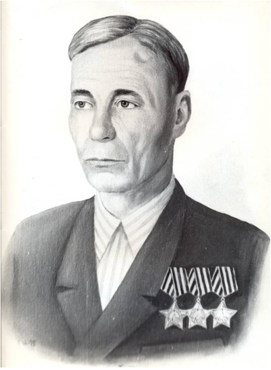

Соловьев Иван Александрович
(13.01.1907 – 13.10.1976)
Кавалер ордена Славы 3- х степеней.
Родился 13 января 1907 года в д. Климовщина Шестаковской волости Никольского уезда, впоследствии Шестаковского сельсовета Кичменгско- Городецкого района. Занимался нелегким крестьянским трудом, работал в колхозе, зимой на лесозаготовках.
На фронт призвали, когда Ивану Александровичу было 34 года. Направили в школу снайперов в Мурманске. Оттуда сержанта Соловьева направили на Кандалакшское направление командиром отделения 7- й стрелковой роты 318 стрелкового полка 65- й стрелковой дивизии, которая потом стала именоваться 102- й гвардейской Краснознаменной ордена Суворова стрелковой дивизией. В боях с финнами научился ловкости и меткости в стрельбе.
Одновременно был и снайпером и связистом. За обеспечение бесперебойной связи в этих боях в районе д. Пер - Озеро в Карелии 30 июня 1944 года был награжден орденом Славы 3- й степени. В боях в районе ст. Лаймола в июле в рукопашной схватке уничтожил до 15 солдат противника, показывая пример воинам взвода: стрелял из всех видов оружия, бил врага прикладом, штыком и кинжалом. Его взвод и рота удержали вторую линию обороны, захваченную у противника, до прихода основных сил. За эти бои был представлен к ордену Красной Звезды, но вышестоящий командир на представлении написал: «Достоин награждения орденом Славы 2- й степени».
Дальше подразделение Соловьева двигалось в направлении Норвегии. Дошли до реки Западная Лица, где прорвали оборону противника. Затем бои за освобождение Польши. В боях в Померании весной 1945 года Соловьев И. А. проявил вновь мужество и отвагу. Он первым вошел в г. Шлохау, в числе первых вышел на побережье Балтийского моря и в рукопашной схватке уничтожил 2- х офицеров и 4- х солдат противника. В боях за высоту 14 марта заменил убитого командира взвода, и под его руководством было отражено 6 контратак противника.
Указом Президиума Верховного Совета СССР от 29 июня 1945 года старший сержант И. А. Соловьев за эти подвиги он был удостоен ордена Славы 1-й степени. Это было на территории Польши, где Иван Александрович Соловьев был тяжело ранен и долго лечился в госпитале. Поэтому третий орден солдатской славы он получил через 22 года, в 1967 году. Домой вернулся в 1946 году.
Превозмогая боль от ран, работал в колхозе. Его можно было видеть в поле, на ферме, у стогов сена, на току. Общее собрание колхозников присвоило ему звание «Почетный колхозник». В мирное время это был скромный, спокойный и трудолюбивый человек. Умер в октябре 1976 года.
Бюст кавалера трех орденов Славы установлен в Сквере Воинской Славы в Кичменгском Городке, а также у Шестаковской школы в с. Кильченга. Одна из улиц с. Кичменгский Городок носит имя Ивана Александровича Соловьева.
Родился 13 января 1907 года в д. Климовщина Шестаковской волости Никольского уезда, впоследствии Шестаковского сельсовета Кичменгско- Городецкого района. Занимался нелегким крестьянским трудом, работал в колхозе, зимой на лесозаготовках.
На фронт призвали, когда Ивану Александровичу было 34 года. Направили в школу снайперов в Мурманске. Оттуда сержанта Соловьева направили на Кандалакшское направление командиром отделения 7- й стрелковой роты 318 стрелкового полка 65- й стрелковой дивизии, которая потом стала именоваться 102- й гвардейской Краснознаменной ордена Суворова стрелковой дивизией. В боях с финнами научился ловкости и меткости в стрельбе.
Одновременно был и снайпером и связистом. За обеспечение бесперебойной связи в этих боях в районе д. Пер - Озеро в Карелии 30 июня 1944 года был награжден орденом Славы 3- й степени. В боях в районе ст. Лаймола в июле в рукопашной схватке уничтожил до 15 солдат противника, показывая пример воинам взвода: стрелял из всех видов оружия, бил врага прикладом, штыком и кинжалом. Его взвод и рота удержали вторую линию обороны, захваченную у противника, до прихода основных сил. За эти бои был представлен к ордену Красной Звезды, но вышестоящий командир на представлении написал: «Достоин награждения орденом Славы 2- й степени».
Дальше подразделение Соловьева двигалось в направлении Норвегии. Дошли до реки Западная Лица, где прорвали оборону противника. Затем бои за освобождение Польши. В боях в Померании весной 1945 года Соловьев И. А. проявил вновь мужество и отвагу. Он первым вошел в г. Шлохау, в числе первых вышел на побережье Балтийского моря и в рукопашной схватке уничтожил 2- х офицеров и 4- х солдат противника. В боях за высоту 14 марта заменил убитого командира взвода, и под его руководством было отражено 6 контратак противника.
Указом Президиума Верховного Совета СССР от 29 июня 1945 года старший сержант И. А. Соловьев за эти подвиги он был удостоен ордена Славы 1-й степени. Это было на территории Польши, где Иван Александрович Соловьев был тяжело ранен и долго лечился в госпитале. Поэтому третий орден солдатской славы он получил через 22 года, в 1967 году. Домой вернулся в 1946 году.
Превозмогая боль от ран, работал в колхозе. Его можно было видеть в поле, на ферме, у стогов сена, на току. Общее собрание колхозников присвоило ему звание «Почетный колхозник». В мирное время это был скромный, спокойный и трудолюбивый человек. Умер в октябре 1976 года.
Бюст кавалера трех орденов Славы установлен в Сквере Воинской Славы в Кичменгском Городке, а также у Шестаковской школы в с. Кильченга. Одна из улиц с. Кичменгский Городок носит имя Ивана Александровича Соловьева.